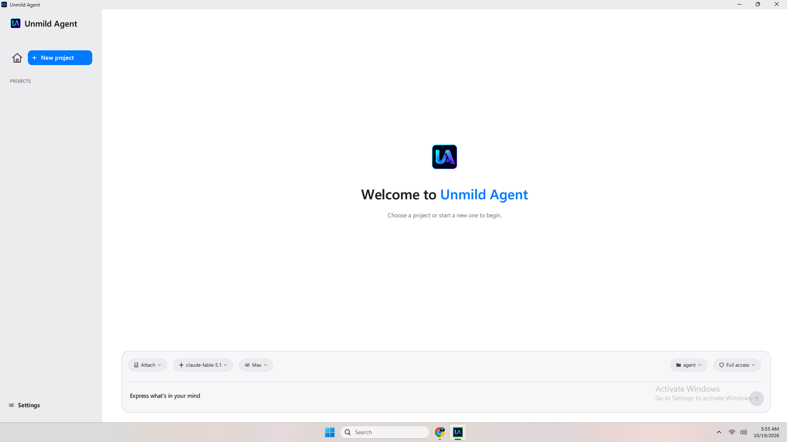
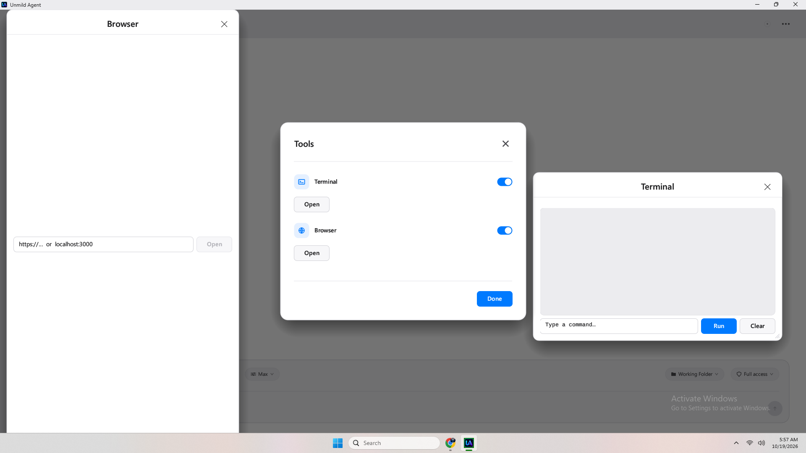
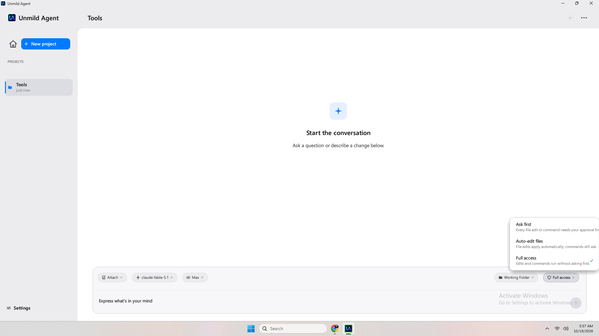
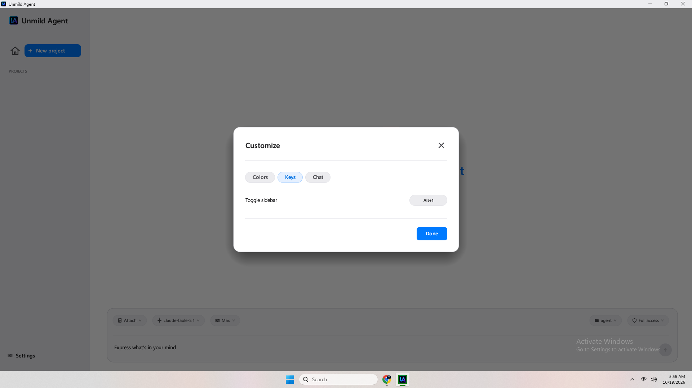
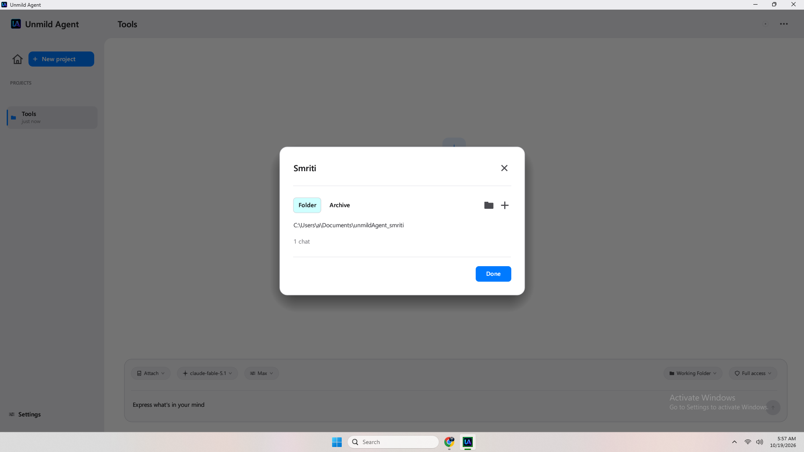
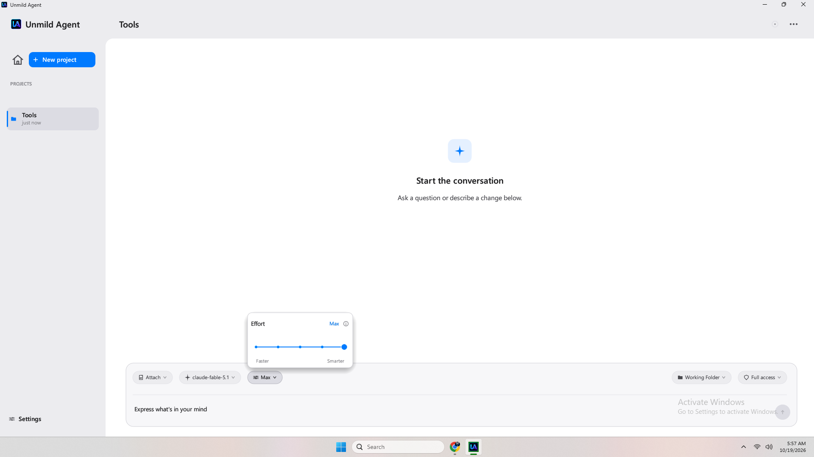
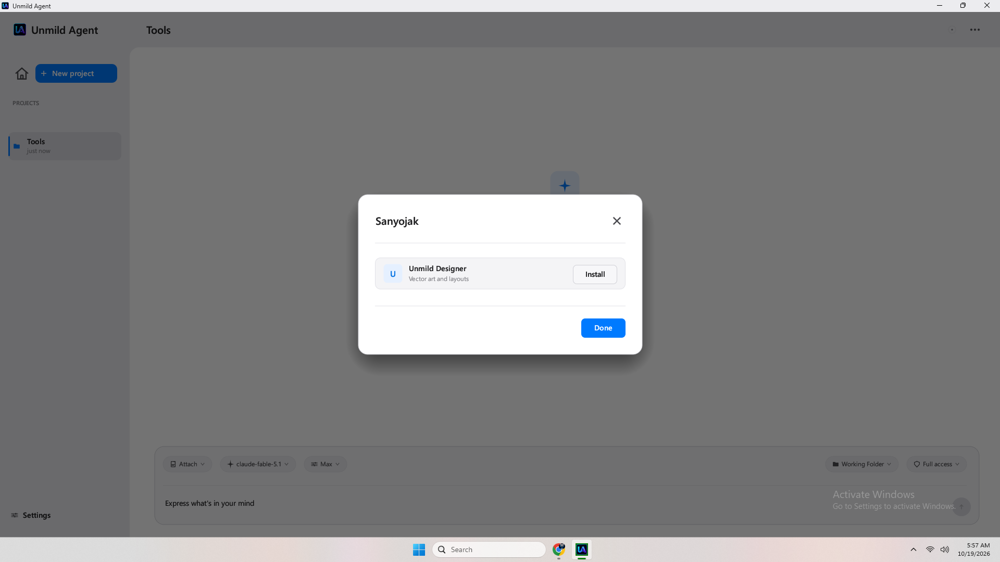
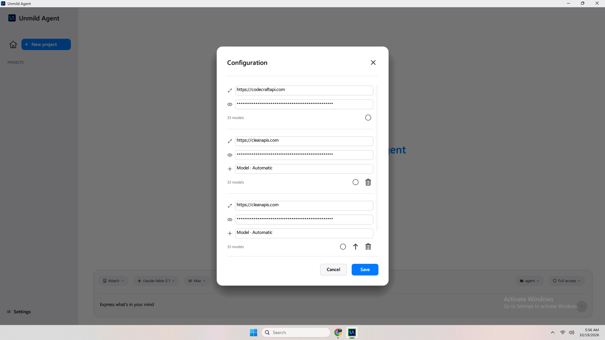

Software that builds software — directly in your folder.
Unmild Agent is a native Windows agent. Not a chat wrapper. It opens your project folder, reads and edits files, runs PowerShell, opens the browser to verify — and keeps going until the task is done. You hold the keys and the permissions.
GET {base}/models... or absolute paths.remember notes injected every turn, survive restarts.
Everything the agent needs to finish work — inside your folder.
No hosted intelligence. No browser IDE. A native binary that owns the working folder end-to-end and asks before it overreaches — if you tell it to.
Autonomous tool loop
Each turn runs on a background thread. The model calls tools as JSON, the agent executes them locally and loops until the model stops. You watch live status lines and the transcript.

Tools — scoped to project folder ·src/tools.rsTruly native Windows
Built in Rust 2021 with egui 0.28 + eframe/glow. Native file dialogs via rfd 0.14, window chrome via windows-sys 0.60, tray via Shell_NotifyIcon. No Electron.

Ask-first blocks the agent thread until you allow/deny.Bring any model — multiple configs
Paste one or many base URLs + API keys. The app probes GET {base}/models via candidate_bases [base, base+/v1]. OpenAI-compatible uses POST {base}/chat/completions + Authorization: Bearer; Anthropic uses POST {base}/messages + x-api-key + anthropic-version: 2023-06-01.

Multiple configurations — switch per project.Smriti — memory that persists
remember notes are written per project on disk and injected into the system prompt every turn. Survives model switches, disconnects and restarts. Archive and edit views are built in.

Smriti editor — durable, project-scoped.Permissions & effort, per turn
Three permission modes — Ask first, Auto-edit, Full access. Five effort budgets — Low 1024 / Medium 2048 / High 4096 / Ultra 8192 / Max 16384. Attach files, images (base64) or folders as prompt chips.

Effort = max_tokens guard. You own the cost.Terminal & browser, built in
run_command runs PowerShell in the project folder. open_url opens your default browser and screenshot verifies visually. Sanyojak connectors link external services when you enable them.

Sanyojak — connectors, not magic.Local app, remote intelligence. Nothing hidden.
Unmild Agent keeps it simple: the UI runs locally as a Rust desktop app; the model you configure is the only remote call. Turns are isolated per project, run in parallel on background threads, and drain progress through bounded channels. Files, memory (Smriti) and transcript history stay on disk under %LOCALAPPDATA%\UnmildAgent\. The only network probe before chat is GET {base}/models — everything else happens when you press Send. No hosted back end, no analytics to tune.
For the full engineering breakdown see ARCHITECTURE.md in the product repo (private). The site shows only the flow, not the internals. Security hinges on local sandbox + rustls, not obscurity.
From install to first build in four steps.
Settings → Configuration → paste base URL + API key (multiple) → Test → use. That is the whole setup.
Get it from the Store
Open Microsoft Store, install Unmild Agent, launch. Create or pick a project folder — the app is sandboxed to that path.
MSIX · Auto-updates
Paste base URL + key
Settings → Configuration → add one or many configs. Paste base URL verbatim and API key, then Test Connection — live GET {base}/models check.
Supports OpenAI + Anthropic
Model, effort, permissions
Picker lists models for your base URL. Set effort (1024–16384) and permissions (Ask-first / Auto-edit / Full). Attach files, images or folders as chips.
Images → base64
Send and approve
Send. Watch thinking, status lines and file diffs. Approve if Ask-first blocks. Stop at any boundary. Reply shows time, file changes and token usage. Run multiple projects in parallel.
Tray-persistent
The path in the app
- Launch → pick working folder
- Settings → Configuration → + Add base URL + API key
- Test Connection — must succeed before chat
- Chat → choose model / effort / permissions → attach → Send
Tip: keep separate configs for OpenRouter, AgentRouter or self-hosted OpenAI-compatible gateways.

Configuration — verbatim base URL, plaintext key stored locally
Real screenshots, not mockups.
All images vendored under assets/images — no external deps. Click to enlarge. 15 PNGs, 117–148 kB each.
Hand-written Rust, not a wrapper.
What you get
Native frame, DWM rounded corners (12px), system tray persistence, MSIX auto-updates. Segoe UI at runtime, Carlito OFL fallback in assets/fonts.
apps.microsoft.com/detail/9P3RXL6LD5F1
| Language & UI | Rust 2021, egui 0.28, eframe + glow, rfd 0.14 |
|---|---|
| Networking | ureq 2.10 (rustls) + serde_json, no async runtime, retries MAX_SEND_RETRIES 12 |
| Windows | windows-sys 0.60 — Dwm + Shell + Gdi + LibraryLoader |
| Window | Native frame, maximized start, 12px corner radius, tray-persistent |
| Distribution | Paid app on Microsoft Store — MSIX, auto-updates |
| Fonts | Segoe UI at runtime, Carlito OFL fallback in assets/fonts |
| Structure | src/app.rs · theme.rs · state.rs · api.rs · tools.rs · ui/* |
| Size & window | ~2,800 lines hand-written Rust, golden-ratio viewport |
Own the agent, not a tab.
Cloud IDEs rent you a container. Unmild Agent runs where your files are.
Unmild Agent
- Native Windows binary — single exe, starts maximized, tray-persistent
- Sandboxed to your folder — cannot escape via
..or absolute paths - You control effort & permission per turn
- Smriti persists across restarts and model switches
- Only network is your configured base URL
Typical web wrapper
- Electron / webview, heavy, slow cold start
- Closes when you close the window
- One-size token budget
- Context lost on refresh
- Unclear sandbox boundaries
Direct answers.
Real info from the product, not generic SEO. Also available as FAQPage schema.
What does Unmild Agent cost?
Paid app on Microsoft Store — see the Store listing for current price. Model usage is billed separately by your provider. Effort Low/Medium/High/Ultra/Max map to 1024/2048/4096/8192/16384 max_tokens.
How does it work under the hood?
Each turn runs on a background thread. The model is called via ureq (blocking HTTP, rustls). Tool calls return as JSON; the agent executes list_dir/read_file/write_file/delete_file inside the sandbox, posts permission requests via Approver channels if needed, and loops until the model stops. AppState::tick drains channels once per frame.
How is it different from cloud coding agents?
It runs locally and natively — real file access, native dialogs, tray persistence, no browser IDE, no Electron. You keep data in your folder; only calls to your configured base URL leave the device. Trade-off: Windows only, and you supply the model.
How long does a task take?
Seconds for small edits, minutes for multi-file refactors. Effort bounds the reply budget: Low is fastest/cheapest, Max allows deep multi-step loops. Stop any turn; the thread bails at the next boundary.
Who should use it?
Windows developers who want an agent that owns the working folder end-to-end with transparent permissions and durable memory. If you prefer local control over a cloud IDE, this is for you.
What are the limitations?
Windows-only desktop. Sandboxed filesystem — no access outside the working folder. Non-streaming chat completions today. You must provide a valid API key and reachable base URL. Test Connection is the only live probe before chat.
Is my data private?
The app runs locally; file content only leaves inside API calls to the provider you configured. remember notes and history are stored locally per project, not in a cloud. See Privacy.
Where do I get support?
Visit unmild.store — home for all Unmild products, docs and support. For the app listing see Microsoft Store.
Help, contact, ownership.
Unmild Agent is a product of UNMILD. The site is static on GitHub Pages — no cookies, no analytics.
We keep support simple
No chat widget, no tracker. If something breaks, tell us where it broke — include your Store version, Windows build, base URL host (not the key) and steps to reproduce.
GitHub Pages site: ~37 kB index · ~24 kB css · Fonts via fonts.googleapis.com
Contact
Owner: UNMILD. For privacy or terms matters use the subject [Privacy] via the contact on unmild.store or the Store listing.
Updates
App updates via Microsoft Store MSIX auto-update. Site updates are static — no background sync, no email unless you write us.
What to include
Project type, working folder size, permission mode, effort level, model name, and the exact error line from the app toast/log. Never send your API key.
Get Unmild Agent for Windows.
Paid app on Microsoft Store. One click to install — then launch, set your API key, and go.